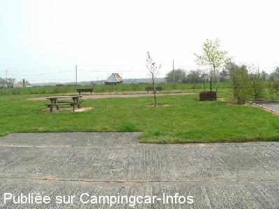

ASN = Aire de services avec stationnement nuit possible de :
GISAY LA COUDRE
(N° 515)
Accès/adresse :
La Villette
27330 GISAY LA COUDRE
27330 GISAY LA COUDRE
Latitude : (Nord) 48.94932° Décimaux ou 48° 56′ 57′′
Longitude : (Est) 0.63298° Décimaux ou 0° 37′ 58′′
Tarif : 2011
Stationnement gratuit
Eau : 2 €
Jetons au restaurant La Tortue
Type de borne : RACLET
Services :


Repas au restaurant le week-end
Autres informations :
6 emplacements
Tél : +33(0)232 443 025
Le 16/07/2012 par dugland27
Le 15/07/2008 par David et Cécile
Le 15/04/2007 par vidange

Le 15/04/2007 par BBQ + coin pique nique
de
guy
le 25/07/2012 :
aire goudronnée très calme en pleine campagne
assez loin du centre bourg
accès délicat pour y arriver surtout pour poids lourd : route étroite sur 1 km environ
dommage car elle est au bord d'un étang et elle est très reposante
aire goudronnée très calme en pleine campagne
assez loin du centre bourg
accès délicat pour y arriver surtout pour poids lourd : route étroite sur 1 km environ
dommage car elle est au bord d'un étang et elle est très reposante
de
dugland27
le 16/07/2012 :
Bien pratique pour une nuit reposante
merci a la commune
Bien pratique pour une nuit reposante
merci a la commune
de
ginule
le 21/05/2012 :
nous y sommes passés le jeudi 17/05/12, mais sommes restés 15 mn
près des routes, pas de promenades agréables aux alentours surtout si vous avez des animaux
pour dormir une nuit c'est suffisant
nous y sommes passés le jeudi 17/05/12, mais sommes restés 15 mn
près des routes, pas de promenades agréables aux alentours surtout si vous avez des animaux
pour dormir une nuit c'est suffisant
de
Anita Boulanger
le 23/07/2010 :
Aire très calme et très sympathique. Avons passé une nuit dans cet endroit ... même si nous étions seuls. Nous arrivions de l'aire du Rugles d'où nous nous sommes rapidement sauvés compte tenu de son emplacement et avons énormément apprécié ce petit endroit près de l'eau. Avis +++
Aire très calme et très sympathique. Avons passé une nuit dans cet endroit ... même si nous étions seuls. Nous arrivions de l'aire du Rugles d'où nous nous sommes rapidement sauvés compte tenu de son emplacement et avons énormément apprécié ce petit endroit près de l'eau. Avis +++
de
P G
le 22/02/2010 :
Pleasant aire on hard standing. Free parking, Raclet service point, token from bar in village. Very quiet with space for 5 or 6 vans. While we were there a new building was in the process of being finished, possibly a new village hall, because of this there is no longer access to lakeside parking.
Pleasant aire on hard standing. Free parking, Raclet service point, token from bar in village. Very quiet with space for 5 or 6 vans. While we were there a new building was in the process of being finished, possibly a new village hall, because of this there is no longer access to lakeside parking.
de
David et Cécile
le 15/07/2008 :
De passage pour le week-end du 14 juillet 08, cette aire d'une superbe dimension est....on ne peut plus au calme. Mais il y a un super terrain de pétanque, des tables et un barbecue permanent. Service 1 jeton pour eau et électricité.
Possibilité de 8 CC au moins sur plateforme. A+ sur la route !
De passage pour le week-end du 14 juillet 08, cette aire d'une superbe dimension est....on ne peut plus au calme. Mais il y a un super terrain de pétanque, des tables et un barbecue permanent. Service 1 jeton pour eau et électricité.
Possibilité de 8 CC au moins sur plateforme. A+ sur la route !
de
milinawel2
le 14/07/2008 :
Même commentaire que le précédent. De passage la nuit du 6 juin, j'étais seul, un autre CC à préféré aller dans un endroit moins isolé. Même la maison à proximité était déserte. Pour y arriver le GPS est bien utile. Mais ne gâchons pas notre plaisir dans une région ou les aires ne sont pas nombreuses.
Même commentaire que le précédent. De passage la nuit du 6 juin, j'étais seul, un autre CC à préféré aller dans un endroit moins isolé. Même la maison à proximité était déserte. Pour y arriver le GPS est bien utile. Mais ne gâchons pas notre plaisir dans une région ou les aires ne sont pas nombreuses.
de
On the road again
le 29/08/2005 :
Très calme mais un peu à l'écart des grands axes, prévoir un passage éventuel par des petits chemins pour y arriver.
Alors ici, y a vraiment rien... Prévoir le pain et le reste...
Très calme mais un peu à l'écart des grands axes, prévoir un passage éventuel par des petits chemins pour y arriver.
Alors ici, y a vraiment rien... Prévoir le pain et le reste...
de
BOUGARD YVETTE
le 08/08/2005 :
DE PASSAGE EN JUILLET 2005 SUR LE RETOUR VERS LA BELGIQUE;
TRES BEL ENDROIT MAIS A L'ECART DE TOUT.
DIFFICILE DE TROUVER PLUS CALME !! MAIS SECURISANT.
NOUS N'ETIONS QUE DEUX C.C.
DE PASSAGE EN JUILLET 2005 SUR LE RETOUR VERS LA BELGIQUE;
TRES BEL ENDROIT MAIS A L'ECART DE TOUT.
DIFFICILE DE TROUVER PLUS CALME !! MAIS SECURISANT.
NOUS N'ETIONS QUE DEUX C.C.
de
cricridu59
le 14/04/2005 :
aire trés bien réalisée , mais galére pour y accéder ,la route est vraiment trés trés étroite et si une voiture arrive en face ................ alors si c'est un camion ....bonjour les manoeuvres!!
Dommage car endroit trés calme et agréable
aire trés bien réalisée , mais galére pour y accéder ,la route est vraiment trés trés étroite et si une voiture arrive en face ................ alors si c'est un camion ....bonjour les manoeuvres!!
Dommage car endroit trés calme et agréable
de
gilbert mary
le 08/08/2004 :
Aire très calme et très agréable en bordure d'un étang dans lequel on peut pêcher moyennant une carte à la journée délivrée au restaurant " La Tortue ". Celui-ci est tenu par des gens sympathiques, la cuisine y est bonne et à un prix abordable.
En résumé, une bonne journée et une bonne nuit sur une aire bien équipée, fonctionnelle et propre.
Aire très calme et très agréable en bordure d'un étang dans lequel on peut pêcher moyennant une carte à la journée délivrée au restaurant " La Tortue ". Celui-ci est tenu par des gens sympathiques, la cuisine y est bonne et à un prix abordable.
En résumé, une bonne journée et une bonne nuit sur une aire bien équipée, fonctionnelle et propre.
de
F.P.
le 11/04/2002 :
Aucune manoeuvre pour le service,très calme et bel environnement champêtre
trés belle aire,mais un éclairage et quelques places supplémentaires seraient les bienvenus.
Aucune manoeuvre pour le service,très calme et bel environnement champêtre
trés belle aire,mais un éclairage et quelques places supplémentaires seraient les bienvenus.
de
Pascal VIVANT
le 24/10/2000 :
Je n'ai pas fréquenté cette aire,car j'ai de la famille dans les environs.Je souhaite juste apporter mon aide aux campings caristes qui passeront dans le département.
Je n'ai pas fréquenté cette aire,car j'ai de la famille dans les environs.Je souhaite juste apporter mon aide aux campings caristes qui passeront dans le département.